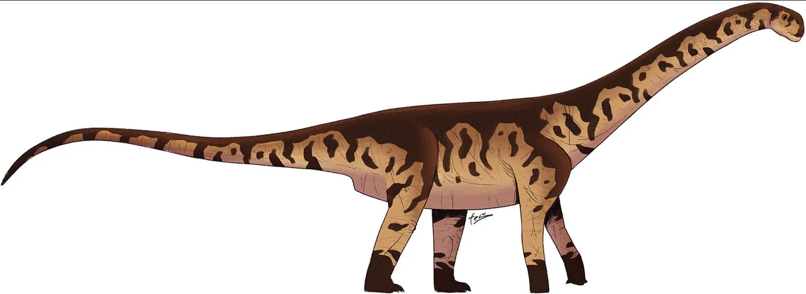
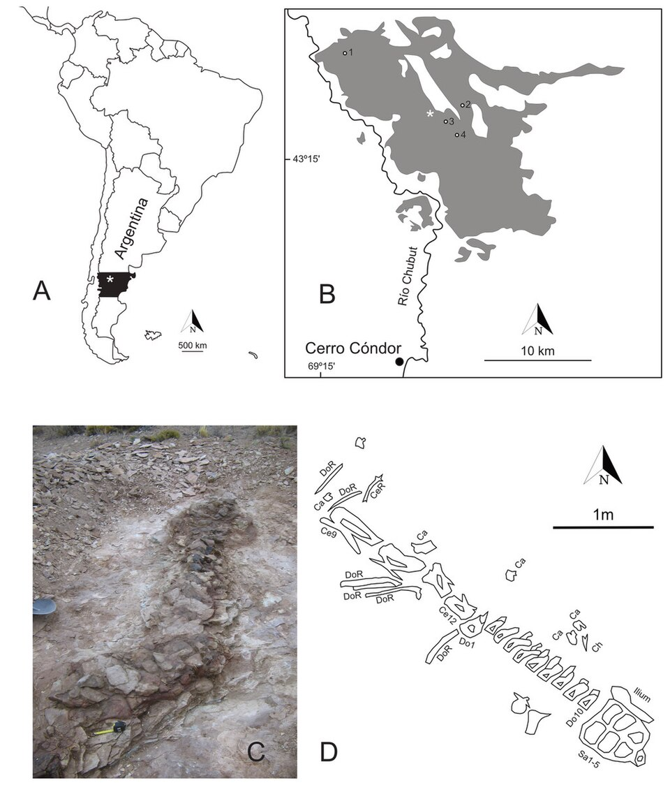
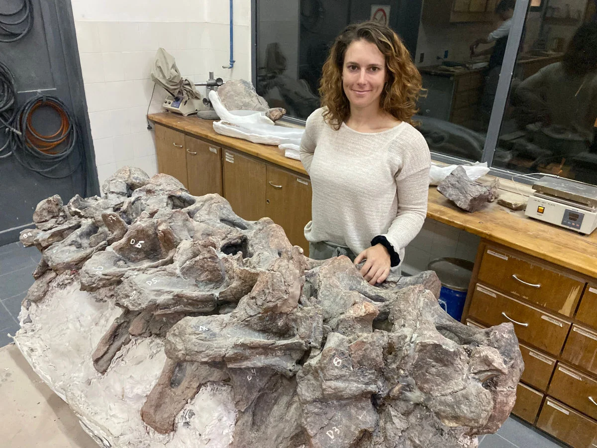
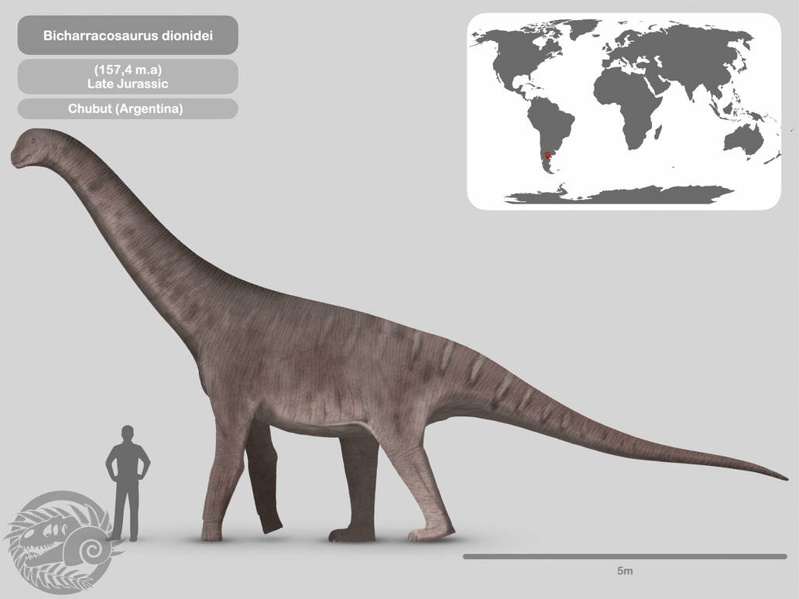

Bicharracosaurus
Bicharracosaurus es un género de dinosaurio saurópodo macronario, posiblemente relacionado con los braquiosáuridos, procedente del Jurásico Superior de la Formación Cañadón Calcáreo, en lo que actualmente es Argentina. El género es monotípico y la especie tipo es Bicharracosaurus dionidei.
Bicharracosaurus
Rango temporal: Jurásico Superior
Hace 157,4 millones de años

Taxonomía
- Reino: Animalia
- Filo: Chordata
- Subfilo: Vertebrata
- Clase: Sauropsida
- Orden: Saurischia
- Suborden: Sauropodomorpha
- Infraorden: Sauropoda
- (sin rango): Macronaria
- Género: Bicharracosaurus
Especie tipo
B. dionidei
Reutter et al., 2026
Descubrimiento y denominación

El espécimen tipo de Bicharracosaurus, MPEF-PV 1730, fue descubierto en la provincia de Chubut, Argentina, en la parte central del afloramiento rocoso ubicado cerca del río Chubut. Fue reportado por un agricultor local, Dionide Mesa, en marzo de 2001. La excavación del sitio se realizó en 2002. La mayor parte del espécimen fue excavada para 2011, aunque se excavaron más vértebras cervicales en 2018. El espécimen consiste en un esqueleto parcial, que contiene vértebras caudales desarticuladas, vértebras cervicales y dorsales articuladas, con costillas, vértebras sacras e ilion.
En 2026, Alexandra Reutter y sus colegas describieron Bicharracosaurus dionidei como un nuevo género y especie de saurópodo macronario basándose en estos restos fósiles, estableciendo a MPEF-PV 1730 como el espécimen holotipo. El nombre genérico, Bicharracosaurus, combina la palabra informal española bicharraco, que significa 'animal grande' —en referencia a su enorme tamaño— y la palabra griega latinizada saurus, que significa 'lagarto'. El nombre específico, dionidei, se debe al agricultor Dionide Mesa, quien encontró este espécimen.

Descripción

Bicharracosaurus tenía una longitud estimada de 15 metros (49,2 pies) y un peso de 20 toneladas (44 092,5 lb).
Se establecieron varios rasgos distintivos. Tres de ellos son autapomorfías, cualidades derivadas únicas. En las vértebras caudales medias y posteriores, la fosa centrodiapofisaria está perforada por un orificio neumático triangular. En las vértebras cervicales más posteriores, la lámina postzigodiapofisaria en su extremo inferior presenta una pequeña protuberancia dirigida hacia arriba. Los cuerpos vertebrales de las vértebras sacras tienen carillas articulares en forma de barca.